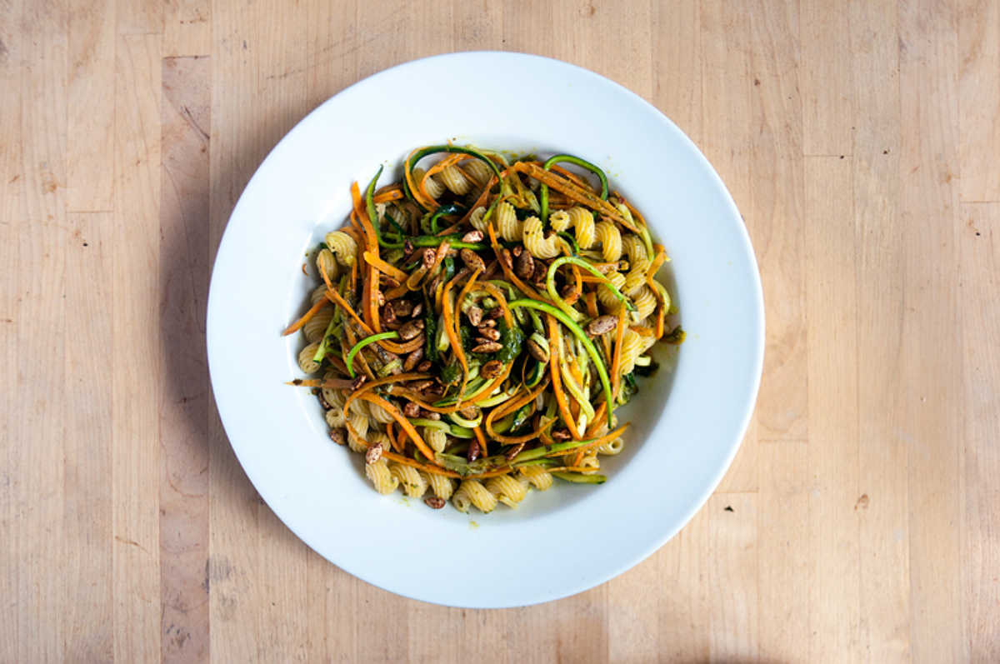

fresh pesto pasta
2 servings — 20 minutes
The combination of carrots and zucchinis look beautiful on a plate. To complete the dish, we added some roasted pumpkin seeds, and topped it off with cherry tomatoes. For bulk, we added cavatappi pasta to this dish. Cavatappi pasta (or scoobi-doo) happens to be our favorite pasta cut (we're a sucker for shapes)
See how to roast your own pumpkin seeds.
 basil400 g
basil400 g garlic2 cloves
garlic2 cloves olive oil60 ml
olive oil60 ml nutritional yeast15 g
nutritional yeast15 g
pesto
- Blend the following ingredients in a food processor or blender: ~400 g (2 cups) of fresh basil, 2 cloves of garlic, 15 g (1/4 cup) of nutritional yeast, 1.25 g (1/4 tsp) of salt and a dash of black pepper. For a cheezier pesto, add an extra 25 g (1/4 cup) of sunflower seed parmesan.
- Add 60 ml (1/4 cup) of olive oil and blend again until smooth. Set aside.
 carrots2
carrots2 cavatappi150 g
cavatappi150 g zucchini1 large
zucchini1 large small heirloom tomatoes6
small heirloom tomatoes6
main
- Bring a pot of water to a boil, add 150 g (1 1/2 cups) of cavatappi pasta and cook until tender. While the pasta is cooking julienne 2 carrots and 1 zucchini.
- Drizzle some olive oil in a pan and bring up to medium heat. Add the vegetable strips and cook for 2-3 minutes.
- Remove from heat, add the cooked pasta as well as a few tablespoons of pesto! The recipe makes about 1 cup of pesto, which you can keep and use for future meals.
- Season pasta with salt and black pepper. Finally, top it all off with roasted pumpkin seeds and small heirloom tomatoes!